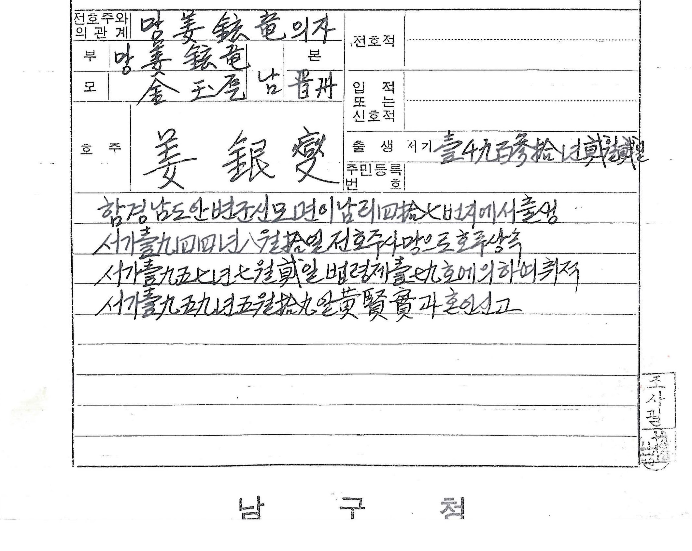
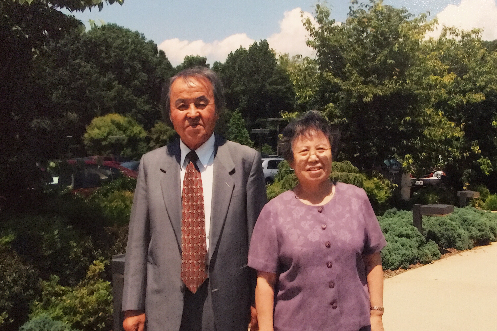

“That search may be made in the book of the records of thy fathers:…”
- Ezra 4:15, King James Version
I have never met my grandfather.
We don’t have a photograph of my grandfather.
We don’t have any records of my family, beyond my grandfather.
We know his name, Kang Hyun Yong
He was an only child and when his mom re-married, he almost assumed a new family name, Shin. However, even though he was not even a teenager, he wanted to and kept his original surname of Kang.
My mom told me that when she was expecting me she had a dream. In that dream, she met a bearded man in a mountain setting.
The man handed my mom a book. The book seemed to be a record. A record of the Kang Family.
Kang Family Records
My sons do not have 2 character names. Left them blank in case we determine 항렬(行列)
항렬(行列)은 같은 씨족 안에서 상하의 차례를 분명히 하기 위하여 만든 서열이다
is a sequence made to clarify the order within the same clan
My uncle’s search for his lineage met its dead end.
There are siblings that share the 항렬(行列).
However since my grandfather was all alone, we could figure out his generations
Families that originated from North Korea were allowed to register their family records in 1957. Since many of the families had either left records behind, or some families may not have had family records.
My father assumed the role of the family head.

To my uncle’s estimate we belong to Eun Youl Clan 은열공파 (殷烈公派 :파조 민첨), 27th generation1.
YU President
One day, was driving to meet June for lunch.
Heard a voice on the classical FM station.
The voice had characteristics not often heard in these parts yet the message was familiar and soothing.
The speaker spoke of the death of his father.
They were memorializing the eternal resting place, at the same time, recognizing that his father was not in that place but in the heart of that son.
Likewise fathers carrying grandfathers in his heart before him.
I needed to hear this personalized message.

A family of Abraham
That YU speaker recounted how the entire Jewish Family has a common heritage.
- Fathers: Abraham, Isaac, and Jacob.
- Mothers: Sarah, Rebekah, Leah, and Rachel.
I only know my father and know the name of my grandfather. We have been told that the all of the Kang family can trace their lineage back to General Kang of the 6th Century AD2.
진주 강씨(晋州 姜氏) 시조 강이식(姜以式)은 고구려 병마도원수이다3
I am not able to confirm if we started out as a Kang family. Perhaps we started our journey as many other families did — no surnames.
Maybe we were indentured servants, bound to the land or authorities.
(My wife can trace their family back to China. An emissary from China stayed in Korea and became a predecessor)
I hope there will come a time when we have a full access to the family records. If that doesn’t happen in this lifetime, we will ponder on these words,
And think not to say within yourselves, We have Abraham to our father: for I say unto you, that God is able of these stones to raise up children unto Abraham.
- Matthew 3:9, King James Version